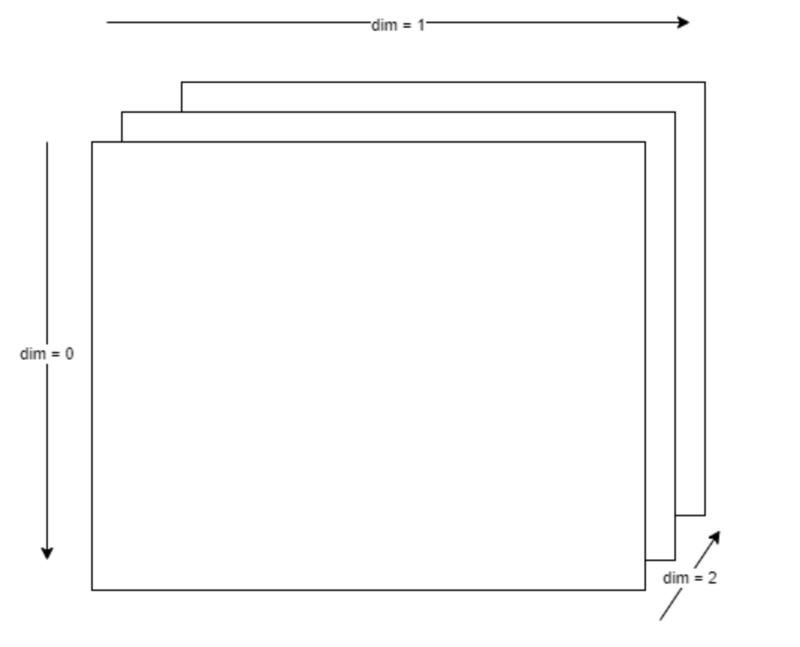

PyTorch
Tensor Dimensions
- 0th dimension is typically the batch
tensor.size(dim=0)gives the size of the batch
- For image data:
- shape:
[B, C, H, W] - Ex:
[64, 1, 28, 28]is batch of 64 images with 1 channel of size 28 x 28 pixels
- shape:
torch.squeeze()gets rid of any dimension of length 1torch.unsqueeze()ortensor[:, None, None]adds dimensions of length 1- 
- negative ints for dimension indicate backward indexing like in lists
dim=-1is the last dimension (e.g. 2 in this case)dim=-2is the 2nd last dimension (e.g. 1 in this case)
einops
rearrange
- Reorder Dimensions:
rearrange(imgs, 'b h w c -> b c h w') - Flatten imgs:
rearrange(imgs, 'b h w c -> b (h w c)')
Models
torch.nn.Module
- Subclass this class and define
forward()(autograd automatically definesbackward()) - Don't use python list to store the layers (the torch module will not be aware of the parameters so doing
model.parameters()will throw an error, e.g. when setting up the optimizer)- parameters don't get registered properly
- Use
torch.nn.Modulelistto keep a list of layers with the torch module being aware of them - If you have parameters in your model, which should be saved and restored in the
state_dict, but not trained by the optimizer, you should register them as buffers (self.register_buffer('param_name', param))- Buffers won’t be returned in
model.parameters(), so that the optimizer won’t have a change to update them. - buffers will also be pushed to correct device if
.to(device)called on parent model - buffers discussion
- Buffers won’t be returned in
- (+) More customizable for complicated networks where
forward()is not as trivial
import torch.nn as nn
import torch.nn.functional as F
class Net(nn.Module):
def __init__(self):
super().__init__()
self.conv1 = nn.Conv2d(3, 6, 5)
self.pool = nn.MaxPool2d(2, 2)
self.conv2 = nn.Conv2d(6, 16, 5)
self.fc1 = nn.Linear(16 * 5 * 5, 120)
self.fc2 = nn.Linear(120, 84)
self.fc3 = nn.Linear(84, 10)
def forward(self, x):
x = self.pool(F.relu(self.conv1(x)))
x = self.pool(F.relu(self.conv2(x)))
x = torch.flatten(x, 1) # flatten all dimensions except batch
x = F.relu(self.fc1(x))
x = F.relu(self.fc2(x))
x = self.fc3(x)
return x
net = Net()
torch.nn.Sequential
- Use
torch.nn.Sequentialto create a simple network without needing any classes - Connects the modules in a cascading fashion, so a
forward()method does not need to be implemented - (+) Simple, fast, easy to use, low amount of code
Pretrained
torchvisionprovides access to many common architectures with the ability to download the pretrained weightsmodel = torchvision.models.resnet18(pretrained=True)
Loss Functions
- Cross Entropy Loss- multiclass classification
- when used for binary classification it expects 2 output features (e.g. [-2.34, 3.61])
- Can get probability of each class by using softmax
- does not give meaningful probabilities in case of binary classification (will always be something like [0.3%, 99.7%])
- Binary Cross Entropy Loss- binary classification
- expects 1 output feature (e.g. [-2.34])
- Can easily get probability of class 1 using sigmoid on the network's output logits
Training
- For mutliclass classifiers, the models traditionally output the logits and then the CrossEntropy loss function computes the softmax as part of the loss evaluation for numerical stability
- this means for inference/testing the softmax must be applied to the classifiers output to get the final class probabilities (from which the max or top-k max can be taken)
def train_step(model, optimizer, train_loader, loss_fn, epoch, device):
model.train()
running_loss = 0.0
total_correct = 0
total_samples = 0
for data, targets in train_loader:
data = data.to(device)
targets = targets.to(device)
predictions = model(data) # shape: [batch, num classes] (for classifier)
loss = loss_fn(predictions, targets)
optimizer.zero_grad()
loss.backward()
optimizer.step()
class_probs = torch.nn.functional.softmax(predictions, 1)
class_pred = torch.max(class_probs, 1).indices
total_correct += sum(targets == class_pred).cpu().item()
total_samples += targets.size(dim=0)
running_loss += loss.item()
train_loss = running_loss / len(train_loader)
train_accuracy = total_correct / total_samples * 100.0
print(f'{epoch}: Train Loss: {train_loss:.3f} | Train Accuracy: {train_accuracy:.2f}')
return train_loss, train_accuracy
Freezing Weights
- set
parameter.requires_grad = Falseso the gradient won't be computed with torch.no_grad():does not compute the gradient for anything done within the context (read more)- useful for finetuning pretrained networks where you only want to modify the params in the classifer layers to make predictions on the new labels:
model = torchvision.models.resnet18(pretrained=True)
# Freeze all the parameters in the network
for param in model.parameters():
param.requires_grad = False
# replace last linear layer (the classifier) with new unfrozen classification layer
model.fc = nn.Linear(512, 10)
Testing
def test_classifier(model, test_loader, loss_fn, epoch, device):
model.eval()
running_loss = 0.0
total_correct = 0
total_samples = 0
with torch.no_grad():
for data, targets in test_loader:
data = data.to(device)
targets = targets.to(device)
predictions = model(data) # model outputs logits
running_loss += loss_fn(predictions, targets).item()
class_probs = torch.nn.functional.softmax(predictions, 1)
class_pred = torch.max(class_probs, 1).indices
total_correct += sum(targets == class_pred).cpu().item()
total_samples += targets.size(dim=0)
test_loss = running_loss / len(test_loader)
test_accuracy = total_correct / total_samples * 100.0
print(f'{epoch}: Test Loss: {test_loss:.3f} | Test Accuracy: {test_accuracy:.2f}%')
return test_loss, test_accuracy
Full Loop
def train_test_loop(epochs, train_loader, test_loader, device):
model = nn.Sequential(
nn.Conv2d(1, 10, 5),
nn.ReLU(),
nn.Conv2d(10, 20, 5),
nn.ReLU(),
nn.Flatten(),
nn.Linear(8000, 200),
nn.ReLU(),
nn.Linear(200, 10))
model.to(device)
optimizer = torch.optim.Adam(model.parameters(), lr=1e-3)
loss_fn = torch.nn.CrossEntropyLoss()
train_losses = []
train_accuracy = []
test_losses = []
test_accuracy = []
test_classifier(model, test_loader, loss_fn, -1, device)
for epoch in range(epochs):
train_loss, train_acc = train_step(model, optimizer, train_loader, loss_fn, epoch, device)
train_losses.append(train_loss)
train_accuracy.append(train_acc)
test_loss, test_acc = test_classifier(model, test_loader, loss_fn, epoch, device)
test_losses.append(test_loss)
test_accuracy.append(test_acc)
torch.save(model.state_dict(), 'model.pth')
torch.save(optimizer.state_dict(), 'optimizer.pth')
plot_losses(train_losses, test_losses)
plot_accuracy(train_accuracy, test_accuracy)
Plot loss/accuracy:
plt.style.use('ggplot')
def plot_losses(train_losses: List[float], test_losses: List[float]):
epochs = range(len(train_losses))
plt.plot(epochs, train_losses, 'b', label='Training Loss')
plt.plot(epochs, test_losses, 'g', label='Test Loss')
plt.title('Train vs. Test Loss')
plt.xlabel('Epochs')
plt.ylabel('Loss')
plt.legend()
plt.show()
def plot_accuracy(train_accuracy: List[float], test_accuracy: List[float]):
epochs = range(len(train_accuracy))
plt.plot(epochs, train_accuracy, 'b', label='Training Accuracy')
plt.plot(epochs, test_accuracy, 'g', label='Test Accuracy')
plt.title('Train vs. Test Accuracy')
plt.xlabel('Epochs')
plt.ylabel('Accuracy (%)')
plt.legend()
plt.show()
GPU
device = torch.device("cuda:0" if torch.cuda.is_available() else "cpu")model.to(device)moves the model to the device and does not require reassignment- all parameters must be properly registered in the module (no layers in python lists)
data.to(device)returns a copy of the tensor on the specified device so in order for it to work you need reassignment:data = data.to(device)- this is because moving tensors is treated differently than moving models
Distributed Training
- Easiest method is using
pip install acceleratelibrary provided by hugging face- works with cpu, multiple gpus, tpus, etc. and code remains the same
- docs
from accelerate import Accelerator
accelerator = Accelerator()
model, optimizer, training_dataloader, scheduler = accelerator.prepare(
model, optimizer, training_dataloader, scheduler
)
for batch in training_dataloader:
optimizer.zero_grad()
inputs, targets = batch
outputs = model(inputs)
loss = loss_function(outputs, targets)
accelerator.backward(loss)
optimizer.step()
scheduler.step()
accelerate configaccelerate launch {script_name.py} --arg1 --arg2 ...accelerate launch -h
Data Loading
- Overview
- Data Docs
pin_memory=Truein the dataloader when using the GPU since it reduces a CPU -> CPU copy and makes the transfer more efficient
Core Types
torch.Tensor- A multi-dimensional array with support for autograd operations likebackward(). Also holds the gradientw.r.t. the tensor.nn.Module- Neural network module. Convenient way of encapsulating parameters, with helpers for moving them to GPU, exporting, loading, etc.nn.Parameter- A kind of Tensor, that is automatically registered as a parameter when assigned as an attribute to aModule.autograd.Function- Implements forward and backward definitions of an autograd operation. EveryTensoroperation creates at least a singleFunctionnode that connects to functions that created aTensorand encodes its history.
Advanced Techniques
- PyTorch Training Step Dissection for advanced performance optimization
Gradient Clipping
optimizer.zero_grad()
loss.backward()
# by value
torch.nn.utils.clip_grad_value_(model.parameters(), clip_value=1)
# by norm
torch.nn.utils.clip_grad_norm_(model.parameters(), clip_norm=1)
optimizer.step()
- Note that it stacks all the paremeters into a single vector then performs the clipping
Hooks
tensor.backward()starts the backward pass on the computational graph with a default starting gradient value of 1.0- allow us to inspect (and possibly change) gradients as they flow backwards through the graph
- hooks get called on tensors in the order they were added
.retain_grad()stores the grad on non-leaf/intermediate nodes in the computational graph- when adding hooks to a intermediate node in the forward graph (stored in the backward_hooks dict), the function will also be added as a pre-hook to the corresponding node in the backwards graph to be run on the gradient before the node does its thing
def ex_hook(grad):
print(grad) # or do some other visualization
return grad + 2 # if you return nothing, the same gradient as before will be used
c.register_hook(ex_hook)